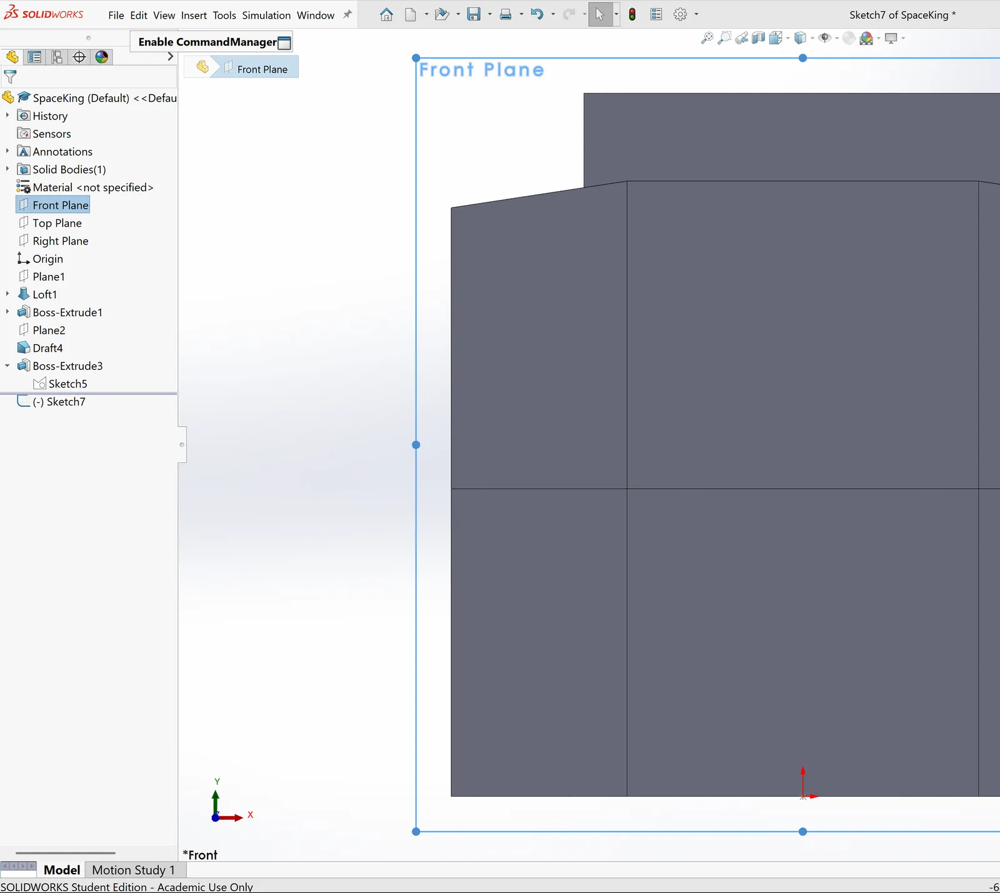
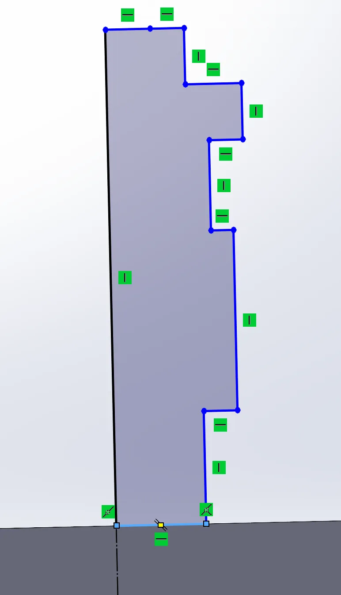
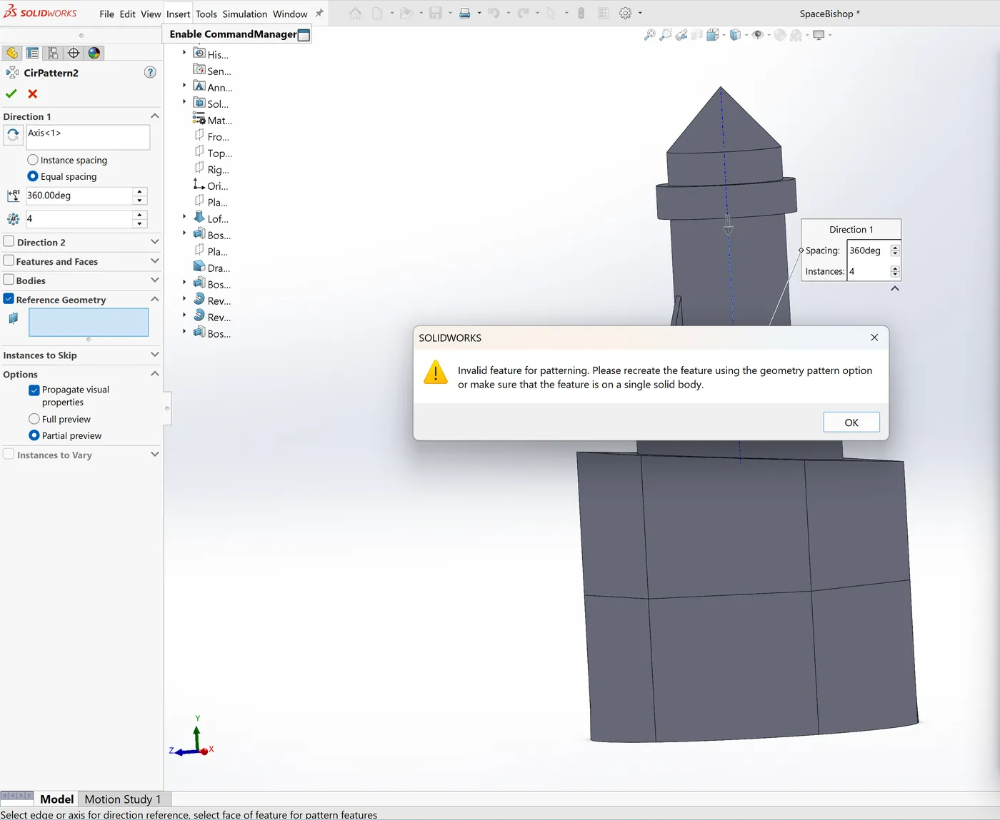
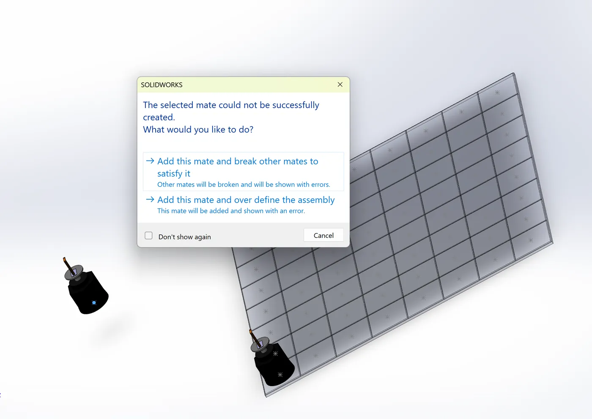

Space Chess Set
A chess set I modeled in SolidWorks for an assembly assignment. Every piece is a bit of space hardware. The king is an orbital satellite, and the pawn is an astronaut helmet.
- Role
- Designer
- Format
- SolidWorks assembly assignment
- Tool
- SolidWorks
- Output
- Assembly and 7 drawings

Summary
I modeled six space-themed chess pieces in SolidWorks, assembled them on a board, and made drawings of the set and of each piece. The king is the tallest piece at 212.00 mm.
Problem
The assignment was to build an assembly in SolidWorks. I picked a space theme because my involvement with NASA through the NPWEE program had strengthened my interest in aerospace engineering and space systems design. The set gave me a way to show that, and my interest in technology too.
Design
The table lists what each piece is, how tall it is, and the SolidWorks features I used to model it.
| Piece | Design | Height (mm) | SolidWorks features |
|---|---|---|---|
| King | Orbital satellite | 212.00 | Revolve, boss-extrude, mirror entities |
| Queen | Satellite disk | 183.41 | 3-point arc, spline, revolve boss |
| Bishop | Rocket | 158.44 | Revolve, boss-extrude |
| Knight | Launch pad | 151.43 | Polygon, loft |
| Rook | Space rover | 136.65 | Revolve, boss-extrude, draft |
| Pawn | Astronaut helmet | 126.21 | Revolve, boss-extrude, cut-extrude, fillet |
Build
I assembled the pieces on a board in SolidWorks. The set drawing has a top view with every piece on its starting square, plus front and side views. Each piece also has its own drawing with dimensioned top, front and side views.








What I’d change
I’d 3D print the pieces to see how they stand and how they feel in the hand. I’d also mate every piece to its square, which ties it to that spot in SolidWorks, so the assembly updates if the board changes.
Gallery